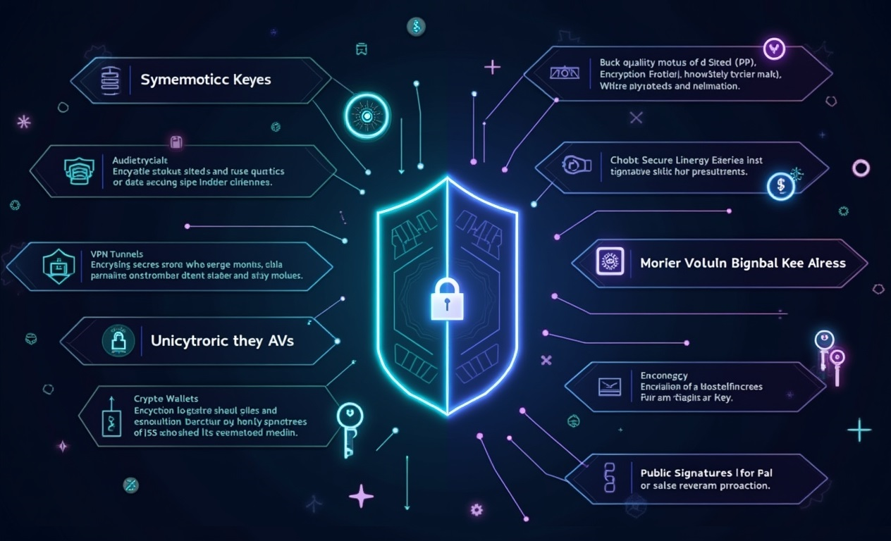
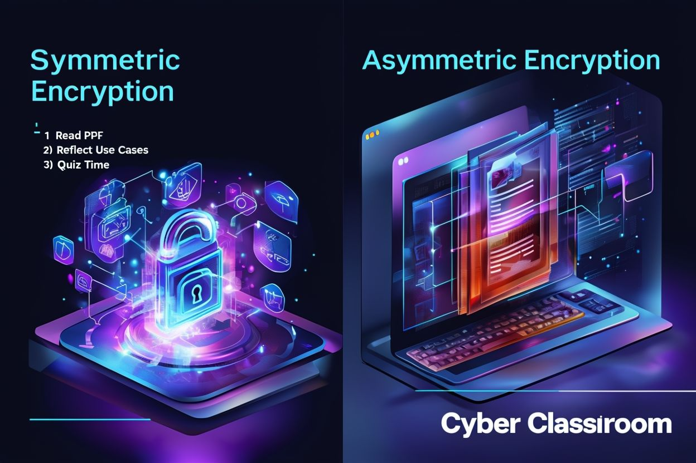

🚀 Welcome to Cryptography Fundamentals

Welcome to the foundational lesson of Web3 Odyssey! Cryptography is the backbone of blockchain technology, digital currencies, and decentralized applications. In this comprehensive lesson, we'll explore the two fundamental approaches to encryption that power the modern digital world.
Understanding the difference between symmetric and asymmetric cryptography is crucial for any Web3 developer. These cryptographic methods secure everything from your cryptocurrency wallet to smart contract interactions, from secure messaging to digital identity verification.
By the end of this lesson, you'll have a deep understanding of how these cryptographic systems work, their strengths and weaknesses, and most importantly, how they're applied in real-world Web3 scenarios. We'll dive into practical code examples, analyze security implications, and explore the mathematical foundations that make these systems secure.
• Understand the fundamental principles of symmetric and asymmetric encryption
• Implement both encryption types using Node.js
• Analyze the security trade-offs and use cases for each approach
• Apply cryptographic concepts to Web3 development scenarios
• Evaluate the role of cryptography in blockchain consensus mechanisms
- A) To make applications run faster
- B) To secure data and verify identities
- C) To reduce storage requirements
- D) To improve user interface design
🔐 Symmetric Encryption: The Shared Secret

Symmetric encryption, also known as secret-key cryptography, uses a single key for both encryption and decryption operations. This approach is like having a single key that both locks and unlocks a treasure chest. The same key that scrambles your data is the exact same key needed to unscramble it.
The fundamental principle relies on mathematical operations that are easily reversible when you have the key, but computationally infeasible to reverse without it. Modern symmetric algorithms like AES (Advanced Encryption Standard) use complex substitution and permutation operations across multiple rounds to achieve this security.
AES, adopted as a standard by the U.S. government in 2001, operates on 128-bit blocks of data and supports key sizes of 128, 192, or 256 bits. The algorithm performs 10, 12, or 14 rounds respectively, with each round involving four main operations: SubBytes (substitution), ShiftRows (permutation), MixColumns (linear transformation), and AddRoundKey (XOR with round key).
ChaCha20, developed by Daniel J. Bernstein, represents a more modern approach to symmetric encryption. It's a stream cipher that generates a keystream which is XORed with the plaintext. ChaCha20 is particularly notable for its performance on software implementations and its resistance to timing attacks, making it ideal for mobile and embedded applications.
• Single key for encryption and decryption
• Fast computation and low resource requirements
• Key distribution challenge (how to securely share the key)
• Perfect for bulk data encryption
• Vulnerable to key compromise (if key is stolen, all data is compromised)
- A) 10 rounds
- B) 12 rounds
- C) 14 rounds
- D) 16 rounds
💻 Implementing Symmetric Encryption in Node.js

Let's implement AES-256-GCM encryption in Node.js. GCM (Galois/Counter Mode) provides both confidentiality and authenticity, making it ideal for secure communications. This mode combines the counter mode of encryption with Galois mode of authentication.
The following implementation demonstrates key generation, encryption, and decryption processes. Notice how we handle the initialization vector (IV) and authentication tag, both crucial for security. The IV ensures that the same plaintext produces different ciphertexts, while the authentication tag prevents tampering.
const crypto = require('crypto');
class SymmetricCrypto {
constructor() {
this.algorithm = 'aes-256-gcm';
this.keyLength = 32; // 256 bits
this.ivLength = 16; // 128 bits
}
// Generate a cryptographically secure random key
generateKey() {
return crypto.randomBytes(this.keyLength);
}
// Encrypt data using AES-256-GCM
encrypt(plaintext, key) {
try {
// Generate random IV for each encryption
const iv = crypto.randomBytes(this.ivLength);
// Create cipher instance
const cipher = crypto.createCipher(this.algorithm, key);
cipher.setAAD(Buffer.from('MOKSHA-WEB3-ODYSSEY', 'utf8'));
// Encrypt the data
let encrypted = cipher.update(plaintext, 'utf8', 'hex');
encrypted += cipher.final('hex');
// Get authentication tag
const authTag = cipher.getAuthTag();
return {
encrypted,
iv: iv.toString('hex'),
authTag: authTag.toString('hex')
};
} catch (error) {
throw new Error(`Encryption failed: ${error.message}`);
}
}
// Decrypt data using AES-256-GCM
decrypt(encryptedData, key) {
try {
const { encrypted, iv, authTag } = encryptedData;
// Create decipher instance
const decipher = crypto.createDecipher(this.algorithm, key);
decipher.setAAD(Buffer.from('MOKSHA-WEB3-ODYSSEY', 'utf8'));
decipher.setAuthTag(Buffer.from(authTag, 'hex'));
// Decrypt the data
let decrypted = decipher.update(encrypted, 'hex', 'utf8');
decrypted += decipher.final('utf8');
return decrypted;
} catch (error) {
throw new Error(`Decryption failed: ${error.message}`);
}
}
}
// Example usage
const symmetricCrypto = new SymmetricCrypto();
const key = symmetricCrypto.generateKey();
const message = "Welcome to Web3 Odyssey! This is a secret message.";
console.log('Original message:', message);
// Encrypt the message
const encryptedResult = symmetricCrypto.encrypt(message, key);
console.log('Encrypted:', encryptedResult);
// Decrypt the message
const decryptedMessage = symmetricCrypto.decrypt(encryptedResult, key);
console.log('Decrypted:', decryptedMessage);
// Demonstrate key sensitivity
try {
const wrongKey = crypto.randomBytes(32);
symmetricCrypto.decrypt(encryptedResult, wrongKey);
} catch (error) {
console.log('Wrong key error:', error.message);
}This implementation showcases several important security practices: using a cryptographically secure random number generator for keys and IVs, implementing authenticated encryption to prevent tampering, and proper error handling to avoid information leakage through error messages.
The Additional Authenticated Data (AAD) parameter adds an extra layer of security by including metadata that must match during decryption. This prevents attacks where an adversary might try to use encrypted data in a different context.
⚖️ Symmetric Encryption: Advantages & Limitations

Understanding the trade-offs of symmetric encryption is crucial for making informed architectural decisions in Web3 applications. While symmetric encryption excels in performance and simplicity, it faces significant challenges in key management and scalability.
| Advantages | Limitations | Web3 Impact |
|---|---|---|
| High Performance: Extremely fast encryption/decryption, suitable for large data volumes | Key Distribution Problem: Securely sharing keys between parties is challenging | Perfect for encrypting blockchain state data and transaction pools |
| Low Resource Usage: Minimal CPU and memory requirements | Scalability Issues: N parties need N(N-1)/2 keys for full connectivity | Enables efficient encryption in resource-constrained IoT devices |
| Simple Implementation: Straightforward to implement and understand | No Non-repudiation: Cannot prove who created a message | Cannot be used alone for digital signatures in smart contracts |
| Strong Security: AES-256 is quantum-resistant for foreseeable future | Key Compromise Risk: Single key compromise affects all communications | Requires careful key rotation strategies in long-lived dApps |
| Standardized Algorithms: Well-tested, widely adopted standards | No Forward Secrecy: Past communications vulnerable if key is compromised | Must be combined with key exchange protocols for secure channels |
In Web3 contexts, symmetric encryption is often used in hybrid systems where asymmetric cryptography handles key exchange, and symmetric encryption handles the bulk data encryption. This approach leverages the strengths of both systems while mitigating their individual weaknesses.
• Encrypting private keys in cryptocurrency wallets
• Securing off-chain data in Layer 2 solutions
• Protecting sensitive smart contract parameters
• Encrypting communication channels in decentralized messaging apps
• Securing backup and recovery mechanisms
🔑 Asymmetric Encryption: The Mathematical Marvel

Asymmetric encryption, also known as public-key cryptography, revolutionized digital security by solving the key distribution problem. This system uses a mathematically related pair of keys: a public key that can be freely shared and a private key that must be kept secret. The mathematical relationship ensures that data encrypted with one key can only be decrypted with the other.
The security of asymmetric encryption relies on mathematical problems that are easy to compute in one direction but computationally infeasible to reverse without additional information. RSA encryption, for example, is based on the difficulty of factoring large composite numbers into their prime factors. While it's easy to multiply two large primes together, finding those primes from their product is extraordinarily difficult.
Elliptic Curve Cryptography (ECC) represents a more modern approach, offering equivalent security to RSA with much smaller key sizes. ECC is based on the discrete logarithm problem over elliptic curves. The mathematical elegance of elliptic curves allows for the same security level as RSA-2048 with just a 256-bit key, making it ideal for mobile and embedded applications.
The elliptic curve used in Bitcoin and Ethereum, secp256k1, is defined by the equation y² = x³ + 7 over a finite field. Points on this curve form a mathematical group where the "addition" operation has special properties that make the discrete logarithm problem particularly hard to solve, even with quantum computers using Shor's algorithm.
• RSA: Based on integer factorization problem
• ECC: Based on elliptic curve discrete logarithm problem
• Key Generation: Mathematical functions create related key pairs
• One-way Functions: Easy to compute forward, hard to reverse
• Trapdoor Functions: Easy to reverse with secret information (private key)
The beauty of asymmetric cryptography lies in its dual functionality. Not only can it provide confidentiality (encryption), but it also enables digital signatures for authentication and non-repudiation. When you sign a message with your private key, anyone can verify the signature using your public key, proving that the message came from you and hasn't been tampered with.
- A) Integer factorization problem
- B) Discrete logarithm problem over elliptic curves
- C) Traveling salesman problem
- D) Boolean satisfiability problem
🛠️ Implementing Asymmetric Encryption in Node.js

Let's implement both RSA and Elliptic Curve cryptography in Node.js. This implementation will demonstrate key generation, encryption/decryption, and digital signatures. We'll use the built-in crypto module which provides robust implementations of these algorithms.
const crypto = require('crypto');
class AsymmetricCrypto {
constructor() {
this.rsaKeyOptions = {
modulusLength: 2048,
publicKeyEncoding: {
type: 'spki',
format: 'pem'
},
privateKeyEncoding: {
type: 'pkcs8',
format: 'pem'
}
};
this.eccKeyOptions = {
namedCurve: 'secp256k1', // Same curve used by Bitcoin/Ethereum
publicKeyEncoding: {
type: 'spki',
format: 'pem'
},
privateKeyEncoding: {
type: 'pkcs8',
format: 'pem'
}
};
}
// Generate RSA key pair
generateRSAKeyPair() {
return crypto.generateKeyPairSync('rsa', this.rsaKeyOptions);
}
// Generate ECC key pair
generateECCKeyPair() {
return crypto.generateKeyPairSync('ec', this.eccKeyOptions);
}
// RSA Encryption
rsaEncrypt(plaintext, publicKey) {
try {
const buffer = Buffer.from(plaintext, 'utf8');
const encrypted = crypto.publicEncrypt({
key: publicKey,
padding: crypto.constants.RSA_PKCS1_OAEP_PADDING,
oaepHash: 'sha256'
}, buffer);
return encrypted.toString('base64');
} catch (error) {
throw new Error(`RSA encryption failed: ${error.message}`);
}
}
// RSA Decryption
rsaDecrypt(encryptedData, privateKey) {
try {
const buffer = Buffer.from(encryptedData, 'base64');
const decrypted = crypto.privateDecrypt({
key: privateKey,
padding: crypto.constants.RSA_PKCS1_OAEP_PADDING,
oaepHash: 'sha256'
}, buffer);
return decrypted.toString('utf8');
} catch (error) {
throw new Error(`RSA decryption failed: ${error.message}`);
}
}
// Digital Signature with ECC
signMessage(message, privateKey) {
try {
const sign = crypto.createSign('SHA256');
sign.update(message);
sign.end();
const signature = sign.sign(privateKey, 'base64');
return signature;
} catch (error) {
throw new Error(`Signing failed: ${error.message}`);
}
}
// Verify Digital Signature
verifySignature(message, signature, publicKey) {
try {
const verify = crypto.createVerify('SHA256');
verify.update(message);
verify.end();
return verify.verify(publicKey, signature, 'base64');
} catch (error) {
throw new Error(`Verification failed: ${error.message}`);
}
}
// ECDH Key Exchange (Elliptic Curve Diffie-Hellman)
performKeyExchange(privateKeyA, publicKeyB) {
try {
const ecdh = crypto.createECDH('secp256k1');
ecdh.setPrivateKey(crypto.createPrivateKey(privateKeyA).export({
type: 'sec1',
format: 'der'
}));
const publicKeyBBuffer = crypto.createPublicKey(publicKeyB).export({
type: 'spki',
format: 'der'
});
const sharedSecret = ecdh.computeSecret(publicKeyBBuffer);
return sharedSecret.toString('hex');
} catch (error) {
throw new Error(`Key exchange failed: ${error.message}`);
}
}
}
// Demonstration
const asymmetricCrypto = new AsymmetricCrypto();
// Generate key pairs
console.log('Generating RSA key pair...');
const rsaKeys = asymmetricCrypto.generateRSAKeyPair();
console.log('Generating ECC key pair...');
const eccKeys = asymmetricCrypto.generateECCKeyPair();
// RSA Encryption/Decryption Demo
const message = "Web3 Odyssey: Mastering Cryptography!";
console.log('Original message:', message);
const encrypted = asymmetricCrypto.rsaEncrypt(message, rsaKeys.publicKey);
console.log('RSA Encrypted:', encrypted);
const decrypted = asymmetricCrypto.rsaDecrypt(encrypted, rsaKeys.privateKey);
console.log('RSA Decrypted:', decrypted);
// Digital Signature Demo
const signature = asymmetricCrypto.signMessage(message, eccKeys.privateKey);
console.log('Digital Signature:', signature);
const isValid = asymmetricCrypto.verifySignature(message, signature, eccKeys.publicKey);
console.log('Signature Valid:', isValid);
// Demonstrate signature verification failure with wrong message
const tamperedMessage = "Web3 Odyssey: Mastering Cryptography! [TAMPERED]";
const isTamperedValid = asymmetricCrypto.verifySignature(tamperedMessage, signature, eccKeys.publicKey);
console.log('Tampered Message Signature Valid:', isTamperedValid);This implementation demonstrates the versatility of asymmetric cryptography. Notice how we use RSA for encryption (with OAEP padding for security) and ECC for digital signatures. The secp256k1 curve is particularly significant in Web3 as it's the same curve used by Bitcoin and Ethereum for generating addresses and signing transactions.
The digital signature functionality is crucial for Web3 applications. Every transaction on Ethereum is signed with the sender's private key, allowing the network to verify the transaction's authenticity without revealing the private key. This enables trustless interactions in decentralized systems.
🎯 Asymmetric Encryption: Strengths & Challenges
Asymmetric encryption solves many problems that symmetric encryption cannot address, but it comes with its own set of trade-offs. Understanding these characteristics is essential for designing secure and efficient Web3 systems.
| Advantages | Limitations | Web3 Applications |
|---|---|---|
| No Key Distribution Problem: Public keys can be shared openly | Computational Overhead: 100-1000x slower than symmetric encryption | Enables trustless peer-to-peer transactions without intermediaries |
| Digital Signatures: Provides authentication and non-repudiation | Key Size Requirements: Larger keys needed for equivalent security | Essential for transaction signing and smart contract authentication |
| Scalable Security: N parties need only N key pairs | Quantum Vulnerability: Shor's algorithm threatens RSA and ECC | Supports massive decentralized networks with millions of participants |
| Key Exchange: Enables secure communication over insecure channels | Implementation Complexity: More complex algorithms and protocols | Facilitates secure communication in decentralized messaging systems |
| Forward Secrecy: Compromise of long-term keys doesn't affect past sessions | Certificate Management: Requires PKI for key authenticity | Enables secure key rotation in long-lived smart contracts |
The quantum threat is particularly relevant for Web3 systems. While current quantum computers cannot break RSA or ECC, future quantum computers running Shor's algorithm could potentially compromise these systems. This has led to research into post-quantum cryptography, with algorithms like lattice-based cryptography being considered for future blockchain implementations.
• Gas costs on Ethereum make complex cryptographic operations expensive
• Deterministic key generation enables HD (Hierarchical Deterministic) wallets
• Multi-signature schemes require multiple private keys for transaction approval
• Zero-knowledge proofs combine with asymmetric crypto for privacy
• Cross-chain bridges rely on asymmetric crypto for asset transfers
In practice, most Web3 applications use hybrid approaches, combining the efficiency of symmetric encryption with the key management advantages of asymmetric encryption. This hybrid model is fundamental to protocols like TLS/SSL, which secure most internet communications today.
🌐 Cryptography in Web3: Real-World Applications
Web3 applications leverage both symmetric and asymmetric cryptography in sophisticated ways to create trustless, decentralized systems. Understanding these applications is crucial for building secure and efficient decentralized applications.
🔐 Cryptocurrency Wallets
Cryptocurrency wallets are perhaps the most visible application of asymmetric cryptography in Web3. Each wallet contains a private key that mathematically corresponds to a public address. When you send cryptocurrency, you're creating a digital signature with your private key that proves ownership of the funds without revealing the key itself.
// Ethereum address generation from private key
const crypto = require('crypto');
const { keccak256 } = require('js-sha3');
function generateEthereumAddress(privateKey) {
// Generate public key from private key using secp256k1
const publicKey = crypto.createPublicKey({
key: privateKey,
format: 'der',
type: 'sec1'
});
// Get uncompressed public key (remove 0x04 prefix)
const publicKeyBytes = publicKey.export({ type: 'spki', format: 'der' });
const uncompressedKey = publicKeyBytes.slice(-64);
// Keccak256 hash of public key
const hash = keccak256(uncompressedKey);
// Take last 20 bytes as Ethereum address
const address = '0x' + hash.slice(-40);
return address;
}📜 Smart Contract Security
Smart contracts use cryptographic signatures to verify that function calls are authorized. Multi-signature contracts require multiple private keys to approve transactions, implementing sophisticated access control mechanisms. Time-locked contracts use cryptographic commitments to ensure actions can only be taken after specific conditions are met.
🔗 Blockchain Consensus
Proof-of-Stake consensus mechanisms rely heavily on cryptographic signatures. Validators sign blocks and attestations, and the network uses these signatures to determine consensus. The cryptographic properties ensure that malicious actors cannot forge signatures or double-spend without being detected and penalized.
🕵️ Privacy-Preserving Technologies
Zero-knowledge proofs combine with traditional cryptography to enable privacy-preserving transactions. zk-SNARKs (Zero-Knowledge Succinct Non-Interactive Arguments of Knowledge) allow users to prove they know certain information without revealing the information itself. This enables private transactions on public blockchains.
• HTTPS connections to Web3 dApps use RSA/ECC for key exchange, AES for data encryption
• IPFS uses content-addressed storage with cryptographic hashes for integrity
• Layer 2 solutions use symmetric encryption for off-chain data, asymmetric for settlement
• Decentralized identity systems combine both approaches for comprehensive security
• Cross-chain bridges use threshold cryptography for secure asset transfers
🌉 Cross-Chain Interoperability
Cross-chain bridges and interoperability protocols use sophisticated cryptographic schemes to enable asset transfers between different blockchains. These systems often employ threshold signatures, where multiple parties must cooperate to create a valid signature, ensuring no single party can control cross-chain assets.
- A) Symmetric encryption only
- B) Asymmetric cryptography with threshold signatures
- C) Hash functions only
- D) Quantum cryptography
🛠️ Hands-On Challenge: Build a Secure Message System
Now it's time to apply your knowledge! Your challenge is to build a secure messaging system that combines both symmetric and asymmetric cryptography. This exercise will reinforce the concepts we've learned and demonstrate how they work together in real applications.
📋 Exercise Requirements
Create a Node.js application that implements a hybrid cryptographic system for secure messaging. Your system should use asymmetric cryptography for key exchange and digital signatures, while using symmetric cryptography for message encryption.
// Your challenge: Complete this secure messaging system
class SecureMessenger {
constructor() {
// TODO: Initialize cryptographic components
this.asymmetricCrypto = new AsymmetricCrypto();
this.symmetricCrypto = new SymmetricCrypto();
this.keyPairs = new Map(); // Store user key pairs
this.sessionKeys = new Map(); // Store session keys
}
// TODO: Implement user registration
registerUser(userId) {
// Generate key pair for user
// Store in keyPairs map
// Return public key for sharing
}
// TODO: Implement secure session establishment
establishSession(userA, userB) {
// Generate session key using symmetric crypto
// Encrypt session key with userB's public key
// Sign the encrypted session key with userA's private key
// Return encrypted session key and signature
}
// TODO: Implement secure message sending
sendMessage(fromUser, toUser, message) {
// Retrieve session key for this conversation
// Encrypt message with symmetric encryption
// Sign encrypted message with sender's private key
// Return encrypted message and signature
}
// TODO: Implement secure message receiving
receiveMessage(fromUser, toUser, encryptedMessage, signature) {
// Verify signature using sender's public key
// Decrypt message using session key
// Return decrypted message or throw error if verification fails
}
// TODO: Implement key rotation
rotateSessionKey(userA, userB) {
// Generate new session key
// Securely exchange new key
// Update session keys map
}
}
// Test your implementation
const messenger = new SecureMessenger();
// Register users
const alicePublicKey = messenger.registerUser('alice');
const bobPublicKey = messenger.registerUser('bob');
// Establish secure session
const sessionData = messenger.establishSession('alice', 'bob');
// Send secure message
const messageData = messenger.sendMessage('alice', 'bob', 'Hello Web3 World!');
// Receive and verify message
const decryptedMessage = messenger.receiveMessage('alice', 'bob',
messageData.encrypted, messageData.signature);- A) To make the system more complex
- B) To leverage the speed of symmetric encryption and the key management benefits of asymmetric encryption
- C) To increase the message size
- D) To reduce security
- A) To encrypt transaction data
- B) To prove ownership and authorize transactions without revealing private keys
- C) To compress transaction data
- D) To speed up transaction processing
- A) Only future messages are at risk
- B) All past and future messages encrypted with that key are compromised
- C) The system automatically generates a new key
- D) Nothing, the system remains secure
- A) Symmetric encryption
- B) Hash functions and asymmetric key generation
- C) Random number generation only
- D) Compression algorithms
• Add perfect forward secrecy by implementing ephemeral key exchange
• Implement message integrity verification using HMAC
• Add support for group messaging with shared session keys
• Implement key escrow for message recovery
• Add rate limiting and anti-spam measures using proof-of-work
🎓 Summary & Your Cryptographic Journey Ahead
Congratulations! You've completed a comprehensive exploration of symmetric and asymmetric cryptography in the context of Web3 development. Let's consolidate your learning and chart the path forward in your cryptographic mastery journey.
🔑 Key Takeaways
Symmetric Cryptography: Fast, efficient, perfect for bulk data encryption, but faces key distribution challenges. Essential for encrypting large amounts of data in Web3 applications, from blockchain state to off-chain storage.
Asymmetric Cryptography: Solves key distribution, enables digital signatures and authentication, but computationally expensive. Forms the foundation of Web3 identity, transaction authorization, and trustless interactions.
Hybrid Systems: Combine the best of both worlds, using asymmetric cryptography for key exchange and digital signatures, while leveraging symmetric cryptography for efficient data encryption. This approach powers most modern secure communication protocols.
🚀 Advanced Topics to Explore
• Hash Functions & Merkle Trees: The building blocks of blockchain integrity
• Digital Signatures & Multi-Sig: Advanced authentication mechanisms
• Zero-Knowledge Proofs: Privacy-preserving cryptographic protocols
• Post-Quantum Cryptography: Preparing for the quantum computing era
• Threshold Cryptography: Distributed trust and secret sharing
📚 Recommended Resources
Books:
- "Applied Cryptography" by Bruce Schneier - Comprehensive cryptographic reference
- "Mastering Bitcoin" by Andreas Antonopoulos - Cryptography in cryptocurrency context
- "Serious Cryptography" by Jean-Philippe Aumasson - Modern cryptographic practices
Online Resources:
- Cryptopals Challenges - Hands-on cryptographic problem solving
- NIST Cryptographic Standards - Official cryptographic guidelines
- Ethereum Yellow Paper - Technical specification of Ethereum cryptography
🛠️ Practical Next Steps
1. Complete the hands-on exercise from Slide 9 to reinforce your understanding
2. Experiment with different algorithms - try implementing ChaCha20, Ed25519, or other modern cryptographic primitives
3. Build a simple blockchain using the cryptographic concepts you've learned
4. Explore Web3 libraries like ethers.js or web3.js to see cryptography in action
5. Study real-world implementations in popular cryptocurrency wallets and dApps
- A) Use the fastest algorithm available
- B) Never implement cryptography yourself - use well-tested, peer-reviewed libraries
- C) Always use the most complex algorithm
- D) Prioritize code readability over security
Welcome to the future of decentralized technology! 🌟